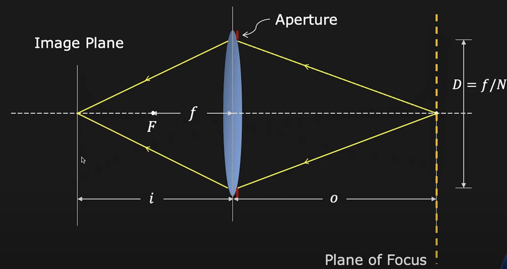
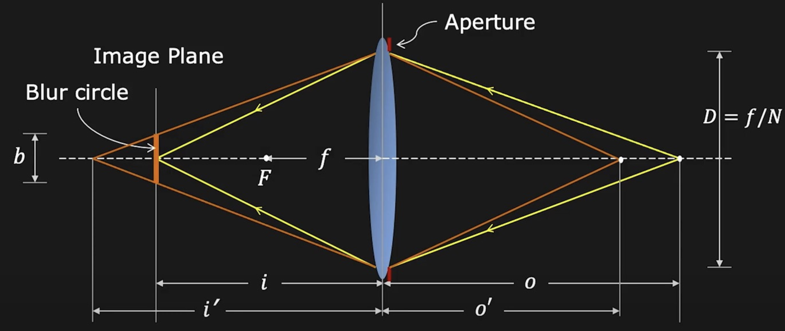
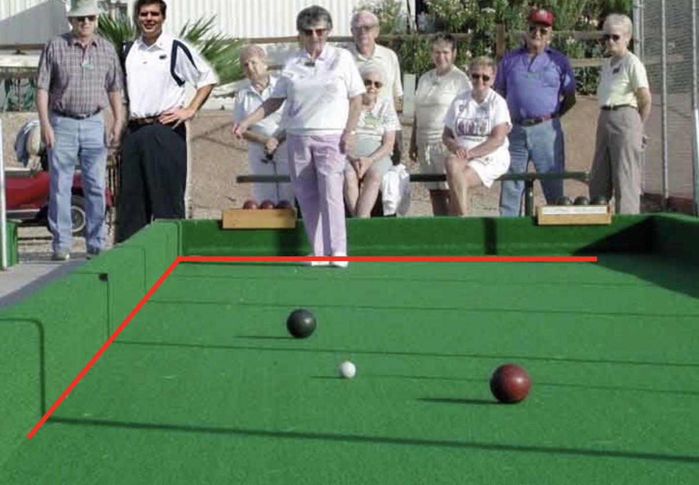
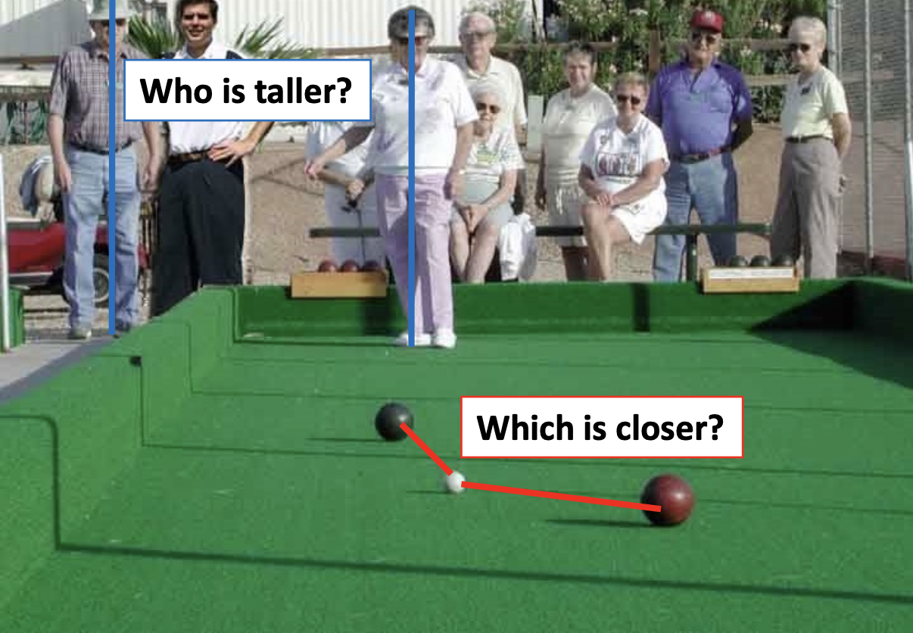
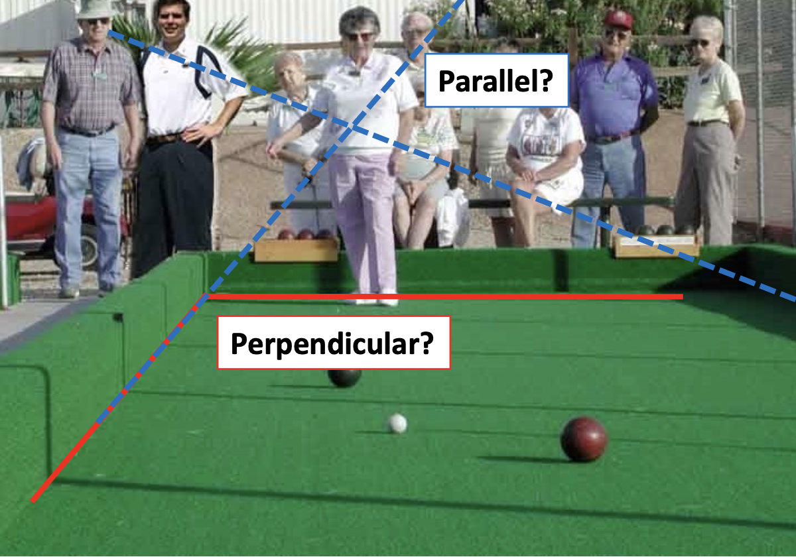

Image Formation⚓︎
约 3524 个字 预计阅读时间 18 分钟
Primitives and Transformations⚓︎
几何图元(geometric primitives) 是用于描述 3D 形状的基本构建块 (basic building blocks)，下面将介绍其中的点(points)、线(lines) 和面(planes)，以及一些最基本的变换(transformations)。
2D Primitives⚓︎
Points⚓︎
- 非齐次坐标(inhomogeneous coordinates) 形式：\(\mathbf{x} = \begin{pmatrix}x \\ y\end{pmatrix} \in \mathbb{R}^2\)
- 齐次坐标(homogeneous coordinates) 形式：\(\tilde{\mathbf{x}} = \begin{pmatrix}\tilde{x} \\ \tilde{y} \\ \tilde{w}\end{pmatrix} \in \mathbb{P}^2\)，其中 \(\mathbb{P}^2 = \mathbb{R}^3 \backslash \{(0, 0, 0)\}\) 为投影空间(projective space)
注：仅比例不同的齐次向量被认为是相等的，并且它们形成了一个等价类 => 齐次坐标由比例定义
-
非齐次坐标 \(\mathbf{x}\) -> 齐次坐标 \(\tilde{\mathbf{x}}\) $$ \tilde{\mathbf{x}} = \begin{pmatrix}\tilde{x} \ \tilde{y} \ \tilde{w}\end{pmatrix} = \begin{pmatrix}x \ y \ 1\end{pmatrix} = \begin{pmatrix}\mathbf{x} \ 1\end{pmatrix} = \bar{\mathbf{x}} $$
其中 \(\bar{\mathbf{x}}\) 为增广向量(augmented vector)。
-
齐次坐标 -> 非齐次坐标 $$ \bar{\mathbf{x}} = \begin{pmatrix}\mathbf{x} \ 1\end{pmatrix} = \begin{pmatrix}x \ y \ 1\end{pmatrix} = \dfrac{1}{\tilde{w}} \tilde{\mathbf{x}} = \dfrac{1}{\tilde{w}} \begin{pmatrix}\tilde{x} \ \tilde{y} \ \tilde{w}\end{pmatrix} = \begin{pmatrix}\tilde{x} / \tilde{w}\ \tilde{y} / \tilde{w}\ 1\end{pmatrix} $$
最后一个元素 \(\tilde{w} = 0\) 的齐次坐标被称为理想点(ideal points) 或无穷远点(points at infinity)。这样的点不能被表示成非齐次坐标的形式。
二维齐次坐标和非齐次坐标的几何关系：
Lines⚓︎
2D 直线可用齐次坐标表示：\(\tilde{\mathbf{l}} = (a, b, c)^T\) $$ {\bar{\mathbf{x}} | \tilde{\mathbf{l}}^T \bar{\mathbf{x}} = 0} \quad \Leftrightarrow \quad {x, y | ax + by + c = 0} $$
我们可以归一化(normalize) \(\tilde{\mathbf{l}}\)，使得 \(\tilde{\mathbf{l}} = (n_x, n_y, -d)^T = (\mathbf{n}, -d)^T\)，其中 \(\|\mathbf{n}\|_2 = 1\)，其中 \(\mathbf{n}\) 是和直线垂直的法向量，\(d\) 是到原点的距离。
一个例外是无穷远直线(line at infinity) \(\tilde{\mathbf{l}}_\infty = (0, 0, 1)^T\)，它经过了所有的理想点。
叉积(cross product) 被表示为斜对称矩阵 (skew-symmetric matrix) 与向量的乘积。 $$ \mathbf{a} \times \mathbf{b} = [\mathbf{a}]_\times \mathbf{b} = \begin{bmatrix}0 & -a_3 & a_2 \a_3 & 0 & -a_1 \ -a_2 & a_1 & 0\end{bmatrix} \begin{pmatrix}b_1 \ b_2 \ b_3\end{pmatrix} = \begin{pmatrix}a_2b_3 - a_3b_2 \ a_3b_1 - a_1b_3 \ a_1b_2 - a_2b_1\end{pmatrix} $$
注：之后我们就约定用方括号表示矩阵，圆括号表示向量。
二维直线的算术运算：
- 齐次坐标下，两条直线的交(intersection) 为：\(\tilde{\mathbf{x}} = \tilde{\mathbf{l}}_1 \times \tilde{\mathbf{l}}_2\)
- 同样地，连接两点的直线可以简写为：\(\tilde{\mathbf{l}} = \tilde{\mathbf{x}}_1 \times \tilde{\mathbf{x}}_2\)
例子
更复杂的代数对象可以使用多项式齐次方程(polynomial homogeneous equations) 来表示。例如，圆锥曲线()（作为平面与三维圆锥的交线）可以用二次方程来表示： $$ {\bar{\mathbf{x}} | \bar{\mathbf{x}}^T \mathbf{Q} \bar{\mathbf{x}} = 0} $$
这对于多视图几何以及相机校准 (camera calibration) 很有帮助。
3D Primitives⚓︎
Points⚓︎
- 非齐次坐标(inhomogeneous coordinates) 形式：\(\mathbf{x} = \begin{pmatrix}x \\ y \\ z\end{pmatrix} \in \mathbb{R}^3\)
- 齐次坐标(homogeneous coordinates) 形式：\(\tilde{\mathbf{x}} = \begin{pmatrix}\tilde{x} \\ \tilde{y} \\ \tilde{z} \\ \tilde{w}\end{pmatrix} \in \mathbb{P}^3\)，其中投影空间 \(\mathbb{P}^3 = \mathbb{R}^4 \backslash \{(0, 0, 0, 0)\}\)
Planes⚓︎
3D 平面可用齐次坐标表示：\(\tilde{\mathbf{m}} = (a, b, c, d)^T\) $$ {\bar{\mathbf{x}} | \tilde{\mathbf{m}}^T \bar{\mathbf{x}} = 0} \quad \Leftrightarrow \quad {x, y, z | ax + by + cz + d = 0} $$
再次归一化(normalize) \(\tilde{\mathbf{m}}\)，使得 \(\tilde{\mathbf{l}} = (n_x, n_y, n_z, -d)^T = (\mathbf{n}, -d)^T\)，其中 \(\|\mathbf{n}\|_2 = 1\)，其中 \(\mathbf{n}\) 是和平面垂直的法向量，\(d\) 是到原点的距离。
一个例外是无穷远平面(plane at infinity) \(\tilde{\mathbf{l}}_\infty = (0, 0, 0, 1)^T\)，它经过了所有的理想点。
Lines⚓︎
3D 直线的表示不如 2D 直线或 3D 平面优雅。一种可能的表示方法是，将线上的点表示为该线上的两个点 \(p\) 和 \(q\) 的线性组合： $$ {\mathbf{x} | \mathbf{x} = (1 - \lambda) \mathbf{p} + \lambda \mathbf{q} \wedge \lambda \in \mathbb{R}} $$
然而，这种表示法使用了 6 个参数来描述 4 个自由度(degree of freedom, DoF)（可以自由变化的数据个数
Quadrics⚓︎
二维圆锥曲线的三维类比是二次曲面(quadric surface)。 $$ {\bar{\mathbf{x}} | \bar{\mathbf{x}}^T \mathbf{Q} \bar{\mathbf{x}} = 0} $$
这同样在多视图几何研究中非常有用，并且可作为有用的建模基元 (modeling primitives)（比如球体、椭球体、圆柱体等
超二次曲面(superquadrics)（二次曲面的泛化）用于形状抽象和压缩：
Transformations⚓︎
2D Transformations⚓︎
-
平移(translation)：对输入的 2D 平移，2 DoF $$ \mathbf{x}' = \mathbf{x} + \mathbf{t} \quad \Leftrightarrow \quad \bar{\mathbf{x}}' = \begin{bmatrix}\mathbf{I} & \mathbf{t} \ \mathbf{0}^T & 1\end{bmatrix} \bar{\mathbf{x}} $$
- 使用齐次表示法可以链接 / 逆转变换
- 增广向量 \(\bar{\mathbf{x}}\) 能始终被替换为一般的齐次形式 \(\tilde{\mathbf{x}}\)
-
欧几里得(Euclidean) 变换：2D 平移 + 2D 旋转，3 DoF $$ \mathbf{x}' = \mathbf{Rx} + \mathbf{t} \quad \Leftrightarrow \quad \bar{\mathbf{x}}' = \begin{bmatrix}\mathbf{R} & \mathbf{t} \ \mathbf{0}^T & 1\end{bmatrix} \bar{\mathbf{x}} $$
- \(\mathbf{R} \in SO(2)\) 是一个正交归一旋转矩阵，满足 \(\mathbf{RR}^T = \mathbf{I}, \det(\mathbf{R}) = 1\)
- 欧几里得变换保留了欧几里得距离
-
相似(similarity) 变换：2D 平移 + 可缩放的 2D 旋转，4 DoF $$ \mathbf{x}' = s\mathbf{Rx} + \mathbf{t} \quad \Leftrightarrow \quad \bar{\mathbf{x}}' = \begin{bmatrix}s\mathbf{R} & \mathbf{t} \ \mathbf{0}^T & 1\end{bmatrix} \bar{\mathbf{x}} $$
- \(\mathbf{R} \in SO(2)\) 是一个旋转矩阵，\(s\) 是一个任意的缩放因子
- 相似变换保留了线之间的夹角关系
-
仿射(affine) 变换：2D 线性变换，6 DoF $$ \mathbf{x}' = \mathbf{Ax} + \mathbf{t} \quad \Leftrightarrow \quad \bar{\mathbf{x}}' = \begin{bmatrix}\mathbf{A} & \mathbf{t} \ \mathbf{0}^T & 1\end{bmatrix} \bar{\mathbf{x}} $$
- \(\mathbf{A} \in \mathbb{R}^{2 \times 2}\) 是一个任意的 \(2 \times 2\) 的矩阵
- 平行线在仿射变换下保持平行
-
投影(projective) 变换：单应性(homography)（一种从一个平面到另一个平面的可逆投影变换
） ，8 DoF $$ \tilde{\mathbf{x}}' = \tilde{\mathbf{H}} \tilde{\mathbf{x}} \quad \left(\bar{\mathbf{x}} = \dfrac{1}{\tilde{x}} \tilde{\mathbf{x}}\right) $$- \(\tilde{\mathbf{H}} \in \mathbb{R}^{3 \times 3}\) 是一个任意的齐次 \(3 \times 3\) 的矩阵（按比例指定）
- 投影变换保留了直线
3D Transformations⚓︎
Direct Linear Transform for Homography Estimation⚓︎
Camera and Lens⚓︎
Pinhole Camera⚓︎
让我们来动手设计一个相机。一种简单（但愚蠢）的想法是直接把一片薄膜 (film) 放在物体前面——结果显然是不行的，因为没有形成物体上一点和薄膜上一点的一一映射。
于是我们在物体和薄膜之间加一块挡板，以阻挡大多数的光线，由此得到了一台简陋的针孔相机(pinhole camera)。中间的开口被称为光圈(aperture)。
注：针孔相机的基本原理可追溯至墨子和亚里士多德的年代。
人们发现，光圈越小，成像就越清晰。
但我们不会让光圈无止尽地小下去，这是因为：
- 光圈越小，通过的光也就越少，成像就会变得很暗
- 衍射(diffraction) 效应：当光圈尺寸和光的波长相当甚至更小时，通过光圈后会偏离直线传播路径并发生弯曲扩散，自然难以形成清晰的像
Lens⚓︎
透镜(lens) 有着和针孔相同的投影原理，但是它能让更多的光进来，并让这些光汇聚起来。
高斯成像公式：\(\dfrac{1}{i} + \dfrac{1}{o} = \dfrac{1}{f}\)，其中 \(i, o, f\) 分别为像距、物距和焦距(focal length)。
当 \(o = \infty\) 时（对于下图，物体是太阳，离透镜很远很远，可看作无穷远
透镜可用于图像放大(image magnification)，放大系数为 \(m = \dfrac{h_i}{h_o}\)
相机通过改变焦距来放大图像：
实际上焦距的调整就是对视场(field of view, FOV) 的改变：焦距越长，视角更窄；焦距越短，视角越宽。
例子
除焦距外，FOV 还取决于传感器的大小。
在相机中，光圈是指镜头的受光区域，一般用镜头直径区分。可通过增减光圈大小来控制图像亮度。
一种更方便的表示光圈的方法是使用一个关于焦距的分数，即 \(D = \dfrac{f}{N}\)，其中 \(N\) 为焦比(F-number)。比如对于 50mm 的焦距，当光圈完全打开时，焦比为 1.8（此时光圈直径为 27.8mm
镜头失焦(lens defocus) 问题：
-
假设物体位于黄色虚线处时，物体的光线进入透镜后正好在底片处汇聚成一点，因此成像很清晰
 -
但如果稍微改变物体的位置，比如靠近些，那么对应的像就会远离镜头（同时也远离底片
） ，来自物体的光在底片处就会形成一片光斑（或叫做模糊圈(blue circle)） ，如图中加粗的橙色实线部分所示
可利用相似三角形解出光斑直径 \(b\)：\(\dfrac{b}{D} = \dfrac{|i' - i|}{i'} \Rightarrow b = \dfrac{D}{i'}|i' - i|, b \propto D \propto \dfrac{1}{N}\)
例子
当物体位置不动时，要想对好焦，可以从以下几方面考虑：
- 只移动底片（右上）
- 只移动镜头位置（左下）
- 两者也可同时移动（右下）
景深(depth of field)：一种物体距离范围，在范围内（即模糊度 b 小于像素尺寸的范围）的图像能够对好焦。
原理图如下：

- \(c = \dfrac{f^2(o - o_1)}{No_1(o - f)} = \dfrac{f^2(o_2 - o)}{No_2(o - f)}\)
- 景深 = \(o_2 - o_1 = \dfrac{2of^2cN(o - f)}{f^4 - c^2N^2(o - f)^2}\)
如何模糊背景？
- 更大的光圈
- 更长的焦距
- 前景要近
- 背景要远
Geometric Image Formation⚓︎
相机模型描述了三维世界和二维图像之间的几何关系。
针孔相机模型：透视投影(perspective projection)，三维坐标 -> 二维坐标
其中 \(p = \begin{bmatrix}u \\ v\end{bmatrix} = \begin{bmatrix}\dfrac{fx}{z} \\ \dfrac{fy}{z}\end{bmatrix}\)。这是一种线性变换(linear transformation)。
齐次坐标(homogeneous coordinates)
-
笛卡尔坐标 -> 齐次坐标
\[ (x, y) \Rightarrow \begin{bmatrix}x \\ y \\ 1\end{bmatrix} \quad (x, y, z) \Rightarrow \begin{bmatrix}x \\ y \\ z \\ 1\end{bmatrix} \] -
齐次坐标 -> 笛卡尔坐标
\[ \begin{bmatrix}x \\ y \\ w\end{bmatrix} = (x / w, y / w) \quad \begin{bmatrix}x \\ y \\ z \\ w\end{bmatrix} = (x / w, y / w, z / w) \]
齐次坐标对缩放 (scaling) 具有不变性(invariant)，因为每个点都有一个关于齐次坐标的无限大的集合。
在齐次坐标下的透视投影中，投影就是使用齐次坐标的矩阵乘法。
要想可视化透射投影的过程，只需将像平面放在相机和物体之间即可。
投影可能会很 tricky，或者说会产生一些有意思的错觉，比如：
明明是画在地面（二维平面）上的，但这个地球看起来就像个立体的物体。
一个投影可能对应无数种不同的物体形状，这便是 "tricky" 的来源。
透视投影对成像的影响：
-
保留了直线“直”的性质
 -
但是长度和角度关系却被丢失了
-
长度
 -
角度

-
其中因为角度问题，两条在物理世界平行的线会在图像中汇聚于一点（即消失点(vanishing point)
性质：
- 任意两条平行线之间都有一个共同的消失点 v
- 从相机中点 C 通过 v 的射线与直线平行
- v 告诉我们直线的方向
- v 可能在图像所在帧外面，甚至无穷远处
由于平面上任意两条平行线定义了一个消失点，这些消失点的并集就会形成一条消失线(vanishing line)。
需要注意的是，不同的平面会产生不同的消失线，因此消失线包含了平面朝向的信息。
例子
Perspective Distortion⚓︎
对于下面左边这幅建筑照片，发现存在一个问题：建筑物的垂线是歪斜的，延伸后可汇聚于一点。
我们的预期是得到像右图那样的效果，那么该如何实现呢？解决方案就是使用移轴相机(view camera)（镜头相对于胶片移动
但有些扭曲并不是来自镜头的问题，比如 ...
径向扭曲(radial distortion)：
- 原因：不好的镜头，通过镜头边缘的光线更多

例子


纠正径向扭曲：
Orthographic Projection⚓︎
正射投影(orthographic projection) 是透视投影的特殊情况：
- 投影中心 (COP) 到投影平面 (PP) 的距离是无穷大的

对应的矩阵运算为： $$ \begin{bmatrix}1 & 0 & 0 & 0 \ 0 & 1 & 0 & 0 \ 0 & 0 & 0 & 1\end{bmatrix} \begin{bmatrix}x \ y \ z \ 1\end{bmatrix} = \begin{bmatrix}x \ y \ 1\end{bmatrix} \Rightarrow (x, y) $$
例子
Photometric Image Formation⚓︎
光度成像(photometric image formation) 描述了三维世界的物理属性与二维图像的颜色之间的关系。
图像传感器：
CMOS（互补金属氧化物半导体 (complimentary metal-oxide semiconductor)
快门(shutter)：
快门速度：
- 控制曝光时间
- 像素值 = 光强在曝光时间下的积分
卷帘快门效应(rolling shutter effect)：
更多内容见这篇帖子。
Color Sensing in Camera⚓︎
感知不同的颜色：
色彩空间
-
RGB
-
HSV
Python 中的图像：
- 用矩阵表示一个图像
- 假设有一个 NxM 的图像叫做
imim(0, 0, 0)：左上角的像素在 R 通道的值im(y-1, x-1, b-1)：向下 y 个像素，向右 x 个像素的像素在第 b 个通道上的值im(N-1, M-1, 2)：右下角的像素在 B 通道的值
实用的色彩感应：拜耳滤光片(Bayer filter)
例子
Shading⚓︎
见《计算机图形学》“着色”一节的笔记。
评论区